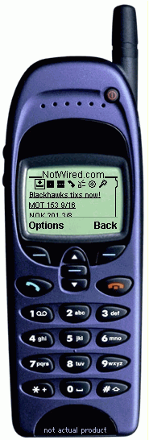

NotWired.com is a complete mobile portal solution built for mobile professionals. Access to NotWired.com software is available through your mobile device and Internet browser.

To take the interactive tour, click on the hyperlinks on the mobile phone.
| Workflow inbox | Get everything in your email or mobile inbox. From this inbox you can delagate to others or respond directly with your phone. |
| Groupware calendar | Create personal calendars, organization calendars, calendars for conference rooms, calendars for events, even calendars for your dog! All calendars are integrated with security so information can be public or private. Daily and weekly views are available. |
| Groupware todos | Are you sick of sending email to colleagues and not knowing the status of the todo? NotWired.com allows you to create todos, assign them to yourself or others, and track the progress to completion. |
| Groupware contacts | You have a personal contact list, company contact list, or any other contact list you wish to create. (Phonebook is available now. Contact management is coming in Spring 2000) |
| Global find | Tired of trying to find that call, meeting, todo or contact? Just use find and NotWired.com will help you search internal and Internet information. |
| Content | Get content on your mobile phone. Build the custom view of content you wish to see. (Coming Spring 2000) |